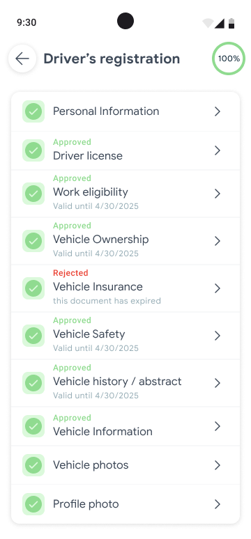
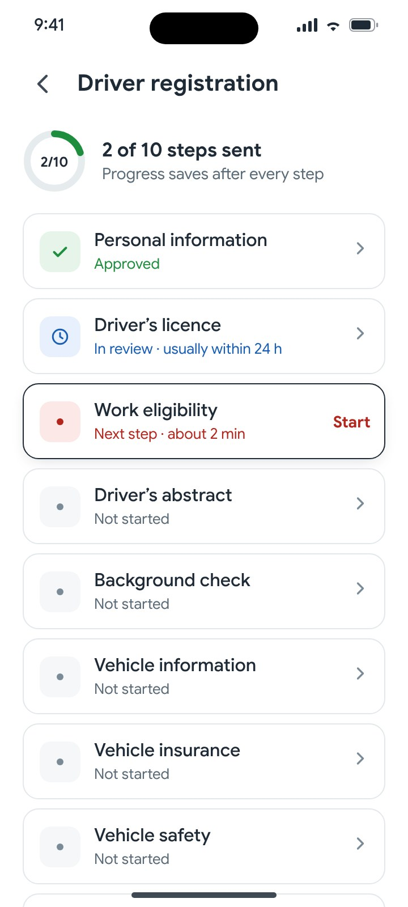
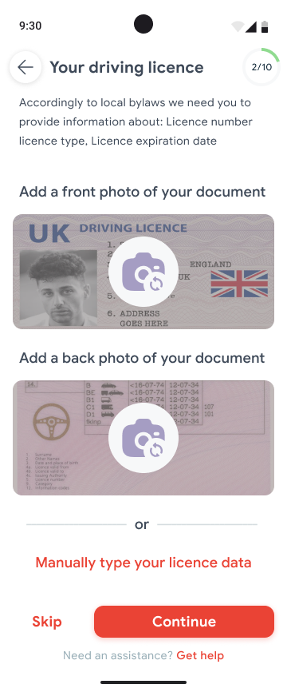
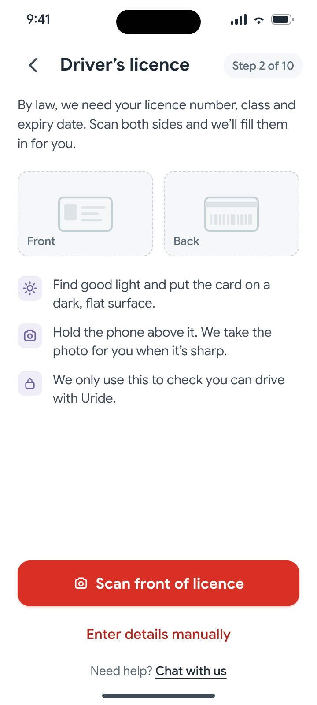
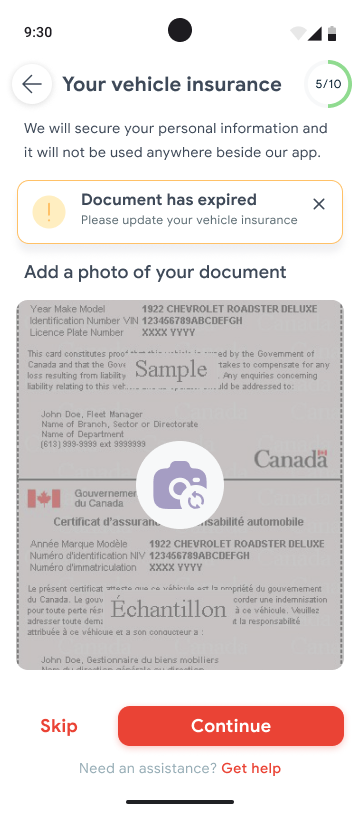
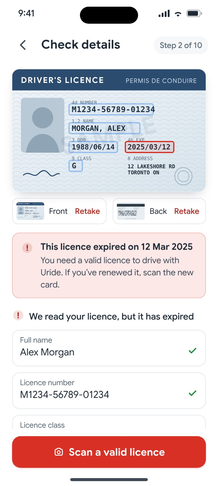

2024

2026
Statuses you can trust
- “Rejected” had a green tick. Now every state has its own colour, icon and words.
- Pale labels were about 1.6:1 contrast. Now all text passes AA.
- The next step is obvious, with a time estimate, and progress is saved.

2024

2026
One clear way forward
- The camera icon covered the photo, so you could not check if it was sharp.
- Plain words. “Accordingly to local bylaws” became “By law, we need…”.
- Scan first, type if you prefer. No “Skip” on a legal step, and auto-capture instead of a shutter.

2024

2026
Errors that tell you what to do
- The expired warning could be closed, and Continue still worked.
- Now the problem is named: which date, why it matters, one action.
- The field that failed is marked on the card and in the form.
← → to switch